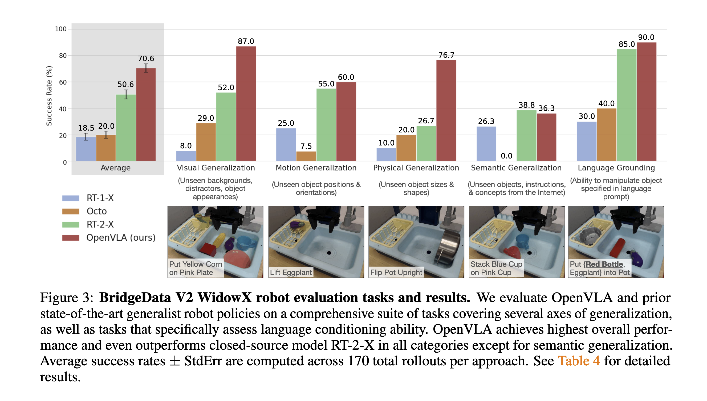

OpenVLA: An Open-Source Vision-Language-Action Model
This paper shows a new paradigm for robot control: leveraging Vision-Language Models (VLMs) pre-trained on extensive robot data. The goal is to fine-tune these pre-trained VLMs, rather than training new behaviors from scratch. This approach is called Vision-Language-Action (VLA) model.
- Current VLAs has not released open weights.
- Previous work has not adequately explored efficient fine-tuning methods. This work utilizes LoRA and quantization for efficient fine-tuning.
Traditional methods typically output language and vision embeddings and then train an action model from scratch. In contrast, this paper’s method directly fine-tunes the VLM to generate actions, which is named VLA.
Benefits of VLA
- Visual and textual data are aligned on an internet scale.
- It uses a generic architecture, allowing for the reuse of VLM training infrastructure.
- It can directly leverage advancements in VLMs.
However, existing methods are either closed-source, making fine-tuning impossible, or are trained and tested only in specific scenarios.
Method
Tokenization
- Values in each channel are discretized into 256 bins.
- The range between the 1st and 99th percentile is evenly divided. This is done to ignore outlier actions, which would otherwise lead to a significant loss of precision.
- The least used tokens in the original vocabulary, specifically the last 256 tokens, are replaced.
OpenX Dataset
- This dataset comprises 70 individual robot datasets, totaling 2 million trajectories.
Data Processing
- To improve consistency between the input and output spaces, the data must include at least one third-person camera and use single-arm end-effector control.
- It’s crucial to balance different robot types, tasks, and scenarios. This work uses Octo’s data mixture weights, which reduce the weight of less diverse datasets and increase the weight of datasets with greater task and scene diversity.
- DROID, a large dataset released after Octo, was initially given only a 10% weight during training. However, due to consistently low accuracy on DROID, it was removed during the later stages of training.
Before the final experiments, small-scale training was conducted on the BridgeData V2 dataset.
Prismatic-7B, which uses SigLIP and DinoV2 as visual encoders, exhibits better spatial reasoning capabilities compared to other VLMs.
The input consists of a single image.
There was no performance difference observed between 224 and 384 resolutions, but the lower resolution significantly reduced training time.
While frozen vision encoders often perform better in VLM training, fine-tuning the vision encoder during VLA training is crucial in the VLA setting. We hypothesize that the pre-trained vision backbone may not capture sufficient fine-grained spatial details about important parts of the scene to enable precise robotic control.
The training involved 27 epochs, consuming 21,500 A100-hours, with a batch size of 2048.
Experiment
Zero-Shot Evaluation
Robot Platforms
- WidowX robot
- Mobile manipulation robot from the RT-1 and RT-2 evaluations
Baselines
- RT-1-X (35M parameters)
- Octo (93M parameters)
- RT-2-X (55B parameters)

Conclusions
- Our model (OpenVLA) performs better than RT-2-X, despite using only 7B parameters.
- RT-1-X and Octo performed poorly on test tasks, especially when distractors were present. They often failed to manipulate the correct objects and sometimes caused the robot to wave its arms aimlessly. This indicates a lack of generalization ability in models without internet pre-training.
- RT-2-X’s advantage: It showed better performance in semantic generalization tasks. This is likely due to its use of larger-scale internet pre-training data and joint fine-tuning on both robot action data and internet pre-training data, which better preserves pre-trained knowledge.
Fine-Tuning Evaluation
For fine-tuning tests, we used the Franka Emika Panda 7-DoF robot.
Baselines
- Diffusion policy
- Octo
- OpenVLA (trained only on the testing tasks)
results
- Diffusion policy performs well in narrow, single-instruction tasks.
- Octo and OpenVLA perform better in diverse fine-tuning tasks involving multiple objects in the scene and requiring language conditioning.
- OpenVLA (scratch) showed lower performance, demonstrating that large-scale robot pre-training (OpenX) is crucial for the effectiveness of the OpenVLA model.
- For narrow but highly dexterous tasks, Diffusion Policy still shows smoother and more precise trajectories.
LoRA and Quantization
We first compared the performance of fine-tuning different modules:
- Full fine-tuning (FT) performed the best.
- LoRA’s performance was close to full FT, and the number of ranks did not significantly affect it.
- Fine-tuning only the head and last layer yielded the worst results.
- Fine-tuning the backbone (excluding the vision encoder) also showed suboptimal performance.
- Sandwich fine-tuning, which unfreezes the vision encoder, token embedding matrix, and last layer, achieved performance close to LoRA.
Model Precision
- Int4 and BF16 showed comparable performance, but Int8 performed very poorly.
- This is because Int8 inference speed was too slow, causing the control frequency to be much lower than the frequency in training.
reference
-
Pali: A jointly-scaled multilingual language-image model
-
Octo: An open-source generalist robot policy
-
QT-Opt: Scalable deep reinforcement learning for vision-based robotic manipulation
-
Mt-opt: Continuous multi-task robotic reinforcement learning at scale
-
Imitating shortest paths in simulation enables effective navigation and manipulation in the real world
-
Droid: A large-scale in-the-wild robot manipulation dataset.
-
Open X-Embodiment: Robotic learning datasets and RT-X models
-
An embodied generalist agent in 3d world.
-
Vision-language foundation models as effective robot imitators.
-
3d-vla: 3d vision-language-action generative world model.
-
What matters in employing vision language models for tokenizing actions in robot control?